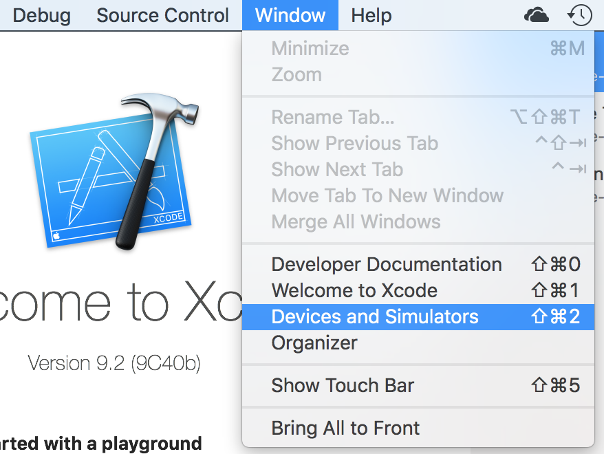
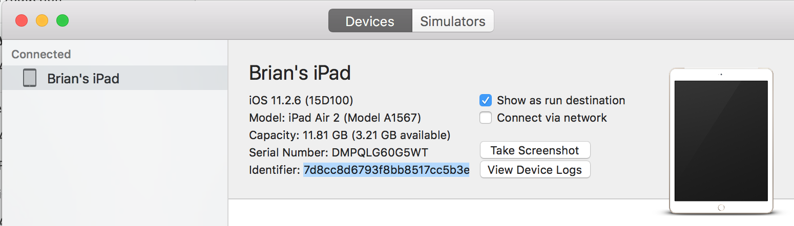
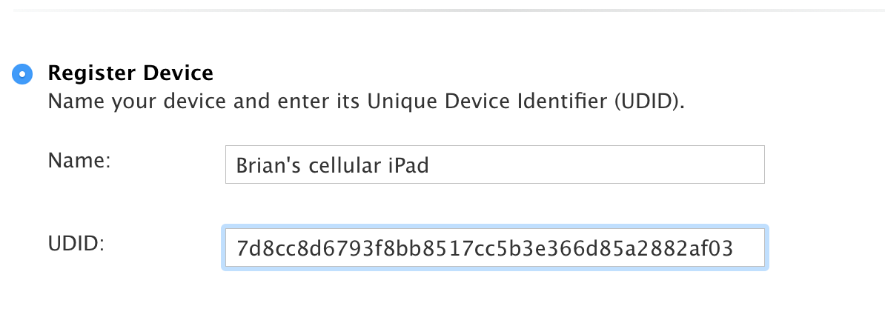

Registering an iOS Device for use with Xcode
If you want to test your iOS app on a device, regardless of whether you
are developing using Visual Studio with the Xamarin platform or using
XCode, you need to register the device on the Apple Developer site.
- Create a certificate
- Go to the Apple
Developer web site and log in.
- On the left side, click on "Certificates, IDs & Profiles"
- On the left side, under the heading "Devices", select the type of
device you want to add
- Next you need to get the UUID of your device.
- Connect your device to your computer using a USB cable
- Open Xcode, click on "Window", then select "Devices and
Simulators"

- Select your device from the list on the left, then highlight the
Identifier (UUID) and press cmd-C to copy it.

- Back on the Apple Developer web page, enter the device name and
UUID, then click "Continue"

You're done! You can use this device with Xcode or Visual Studio.